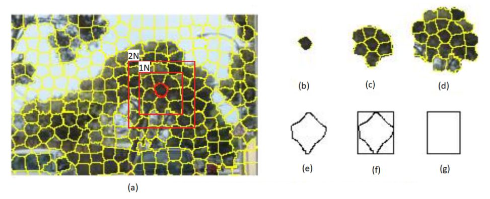
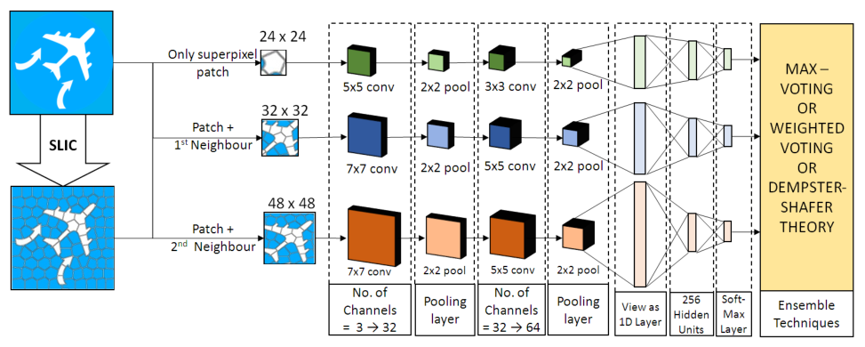

Labelling a scene by looking at small patches and their neighbours
Scene labelling means giving every part of a photo a name such as sky, tree, grass or road. Most deep-learning methods do this one pixel at a time, which is slow, and a single pixel says very little about what it belongs to. We worked with superpixels instead, and gave each one a look at its neighbours. Three small networks voted on each patch, and the combined answer beat several published methods on the same dataset.
Why superpixels
A superpixel is a small patch of neighbouring pixels that look alike and are grouped together. A photo with millions of pixels turns into a few hundred patches. We used an algorithm called SLIC to cut each image up, because it is fast and its patches follow object edges well.
The patch count is set by a number we call the minimum object resolution. We fixed it at roughly 20×20 pixels. Over the whole dataset this gave 291,911 superpixels. Classifying each patch costs far less than classifying each pixel, and a patch carries texture as well as colour.
Adding context
A patch alone can still be ambiguous. Grass and a green tree look similar close up. What surrounds the patch helps: trees tend to sit above grass, and sky sits above both. So for each superpixel we built three inputs. The first is the patch alone. The second adds its immediate neighbours, and the third adds the neighbours of those neighbours.

We trained a separate convolutional neural network for each of the three inputs. A convolutional network is a stack of small learned filters that pick out patterns in an image. Ours were deliberately small: two layers of filters, one fully connected layer of 256 units, and an output that gives a probability for each of the 8 classes. The input sizes were 24×24, 32×32 and 48×48 pixels, chosen by performance on validation images.

Combining the three answers
We tried three ways of merging. Max-voting takes the class that most networks choose. A weighted average blends the probabilities, trusting each network according to how well it did in training. The third uses the Dempster-Shafer theory of evidence. Instead of one probability per class, it also lets the system put belief on pairs of classes. We estimated these from the confusion matrix, the table of which classes the networks mixed up during training. A patch can then be “sky or building” rather than being forced to one answer.
What we found
We used the ICCV09 dataset: 715 photos with 8 classes, split into 500 for training, 72 for validation and 143 for testing. The three networks alone scored almost the same: 72.32% for the patch alone, 72.45% with first neighbours and 72.24% with second neighbours. From that you might think the neighbours add nothing. Combining them showed otherwise.
Dempster-Shafer gave 77.07% and max-voting 72.88%. So the two better methods were practically tied, and each won on different classes. Our method scored above the pixel-based CRF baseline (74.3%), the CNN plus superpixel method of Farabet et al. (74.56%) and three other published methods (76.3% to 76.9%) on this dataset. Testing took 25 to 30 milliseconds per image on a GTX 1080 graphics card, which we took as good enough for real-time use.

What it does not do
The mountain class almost failed: accuracy was 2.56% with Dempster-Shafer and about 4% with the other two methods. Mountain segments are scarce in the dataset, so the networks had little to learn from. Water and foreground objects were also weaker than sky or road. The dataset itself is small, and we did not test other ones.
We saw video segmentation as the natural next step, since a fast and small method suits it.
Acknowledgements
This work is partially supported by the project entitled “Development of knowledge graph from images using deep learning”, sponsored by SERB (Government of India, order no. SB/S3/EECE/054/2016, dated 25/11/2016), and carried out at the Centre for Microprocessor Application for Training Education and Research, CSE Department, Jadavpur University.
How to cite the paper
A Das, Swarnendu Ghosh, R Sarkhel, S Choudhuri, N Das, M Nasipuri (2018). Combining multilevel contexts of superpixel using convolutional neural networks to perform natural scene labeling. Recent Developments in Machine Learning and Data Analytics (IC3), pp. 297–306 · Springer.